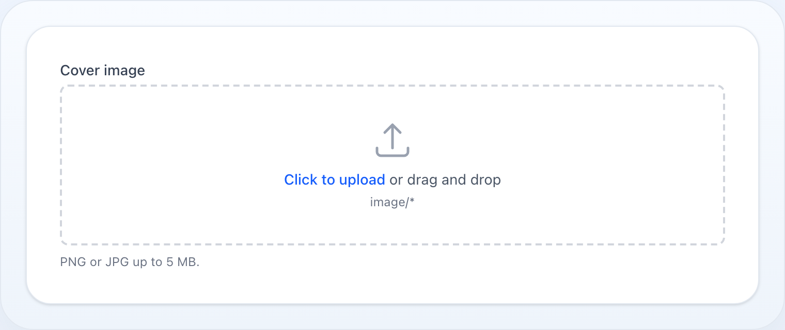

Formuláře
FileUpload
Upload souborů s náhledem, validací a zpracováním obrázků.

Na této stránce
Upload souborů s náhledem, validací a zpracováním obrázků.
use NyonCode\WireForms\Components\FileUpload;Základní použití
FileUpload::make('attachment') ->disk('public') ->directory('attachments')Validace
FileUpload::make('document') ->acceptedFileTypes(['application/pdf', 'image/*']) ->maxSize(10240) // KB ->minSize(100) // KB ->multiple() ->maxFiles(5) ->minFiles(1)Stejné slovo znamená pro Laravel něco jiného podle typu stavu, takže pravidla
sledují pole: u jednoho souboru maxSize/minSize omezují velikost v KB,
u multiple uploadu maxFiles/minFiles omezují počet souborů.
U multiple uploadu limity velikosti platí dál — na každý soubor zvlášť, na
item cestě (data.photos.*) — zatímco počty platí na seznam. Sdílet jeden klíč
nemůžou: max: znamená u souboru kilobajty, ale u pole počet položek.
Režim obrázku
FileUpload::make('photo') ->image() ->imageResizeTargetWidth(1920) ->imageResizeTargetHeight(1080) ->imageCropAspectRatio('16:9')Obojí běží v prohlížeči, ještě před uploadem — smysl je v tom, aby 12Mpx
fotka z mobilu vůbec neputovala po drátě. Ořez se bere ze středu obrázku,
imageResizeTargetWidth/Height výsledek vejdou do zadaného rámce a nikdy
nezvětšují. PNG zůstane PNG, ostatní se překóduje na JPEG a SVG (nemá pixely
k převzorkování) projde nedotčené.
Ve výchozím stavu se ořez bere ze středu. Nech uživatele, ať si ho umístí:
FileUpload::make('photo') ->imageCropAspectRatio('16:9') ->cropInteractively() // před uploadem přetáhne rámečekRámeček je zamčený na poměr, takže výsledek má stejný tvar tak či tak — mění se jen jeho pozice. Vyžaduje poměr (nezakotvený rámeček nemá co omezovat) a platí pro jeden rastrový obrázek: hromadný výběr nebo SVG projdou dál ořezem ze středu.
Avatar
FileUpload::make('avatar') ->avatar() // kulatý náhled + ořez 1:1, jeden souboravatar() implikuje image() a ořez 1:1; explicitní imageCropAspectRatio()
má přednost, nezávisle na pořadí volání.
Úložiště
Soubory se ukládají na libovolný disk z config/filesystems.php přes disk()
(default z configu wire-forms.file_upload.disk, env WIRE_FORMS_UPLOAD_DISK,
fallback public). directory() nastaví cílovou složku (vnořené cesty jsou OK).
FileUpload::make('file') ->disk('s3') ->directory('uploads/2024') ->visibility('public') ->preserveFilenames()Ve výchozím stavu je název uloženého souboru náhodný hash; preserveFilenames()
zachová původní klientský název.
Vlastní název & cesta
Pro konkrétní název použij fileNameUsing() — dostane UploadedFile a vrátí
holý název, pod kterým se soubor uloží (v directory() na disk()). Prázdná
hodnota spadne na výchozí pojmenování:
FileUpload::make('invoice') ->disk('s3') ->directory('invoices') ->fileNameUsing(fn (UploadedFile $file) => $order->id.'.'.$file->extension()) // → invoices/42.pdfPro plnou kontrolu nad celou uloženou cestou — vyber složku a zapiš na disk
sám — použij storeFileUsing(). Má přednost před directory() /
preserveFilenames() / fileNameUsing(); pole si nechá tu cestu (relativní k
disku), kterou vrátíš:
FileUpload::make('scan') ->disk('s3') ->storeFileUsing(fn (UploadedFile $file, string $disk) => $file->storeAs("reports/{$year}", 'summary.pdf', $disk))Ukládání & merge (store-on-submit)
Vybrání (nebo přetažení) souboru ho nahraje do Livewire dočasného úložiště a
vypíše pod drop zónou jako pending upload — na trvalé úložiště se přesune až
při uložení formuláře. Model tak zůstává bez orphanů: abandonovaný formulář
nic nezanechá (dočasný upload sám expiruje). Při uložení se každý pending upload
uloží na nakonfigurovaný disk()/directory() (ctí visibility() i
preserveFilenames()) a pole dehydruje na uloženou cestu (cesty).
- single pole si nechá nejnovější upload a dehydruje na jednu cestu (nebo
null); - multiple pole merguje — nové uploady se přidají k už uloženým cestám, takže další nahrávání nikdy nezahodí to, co tam bylo, a dehydruje na pole cest.
Hostitel musí skládat form runtime (WithForms, nebo table/form action modal);
plumbing uploadu (Livewire file handling, merge krok i store při uložení) se
zapojí automaticky.
Seznam souborů & odebrání
Pole vypíše vše, co má aktuálně ve stavu, pod drop zónou — už uložené cesty (ze záznamu nebo z předchozího uložení) i pending uploady. Obrázky ukážou náhled (uložené přes disk URL, pending přes dočasný náhled), ostatní ikonu dokumentu; uložený soubor odkazuje sám na sebe, pending je označen Pending upload. Každý má tlačítko odebrat, které ho vyhodí ze stavu podle indexu. Ve výchozím stavu odebrání uloženého souboru jen zahodí referenci — fyzický soubor zůstane na disku (úklid je věcí aplikace; viz Mazání z disku); odebrání pending uploadu ho jen zahodí.
deletable(false) zobrazí soubory read-only, bez tlačítka odebrat:
FileUpload::make('gallery') ->image() ->multiple() ->disk('public') ->deletable(false) // zobrazit soubory read-onlyPrivátní disky & náhledy
Uložené cesty se resolvují na URL podle visibility():
- hodnota, která už je plná URL nebo
data:URI, se použije tak, jak je; - veřejný soubor dostane prosté disk URL (
Storage::disk()->url()); - privátní soubor dostane podepsanou, expirující URL
(
Storage::disk()->temporaryUrl()) — životnost nastavíš přessignedUrlExpiration(minuty)(výchozí5).
FileUpload::make('contract') ->disk('s3') ->visibility('private') ->signedUrlExpiration(30) // podepsaná URL platná 30 minutNěkteré drivery neumí URL vyrobit vůbec — local driver hodí výjimku na url()
i temporaryUrl(), dokud není servírován přes Laravel temporary-url route. Místo
fatálu pole degraduje na žádný náhled (název souboru se pořád zobrazí). Aby
privátní soubory na takových discích měly reálný náhled, dodej URL sám přes
previewUrlUsing() — dostane uloženou cestu a vrátí URL nebo data: URI (nebo
null pro žádný náhled):
FileUpload::make('scan') ->disk('local') ->visibility('private') ->previewUrlUsing(fn (string $path) => route('files.show', ['path' => $path]))Mazání z disku
Odebrání uloženého souboru z pole ve výchozím stavu jen zahodí referenci. Když pole vlastní životní cyklus souboru, přihlas se k fyzickému smazání:
FileUpload::make('gallery') ->multiple() ->disk('s3') ->deletesFromDisk() // odebrání zároveň smaže soubor z diskuPro vlastní teardown — smazat i odvozený náhled, odpojit záznam — použij
deleteUsing(). Předání callbacku implikuje deletesFromDisk() a plně nahrazí
vestavěné mazání; dostane uloženou cestu:
FileUpload::make('photo') ->disk('s3') ->deleteUsing(function (string $path) { Storage::disk('s3')->delete($path); Storage::disk('s3')->delete(thumbnailPathFor($path)); })Plná URL ani data: URI (externí reference, kterou pole nikdy neuložilo) se
nesmaže nikdy, ani s deletesFromDisk().
Metody
| Metoda | Popis |
|---|---|
disk(string) |
Storage disk |
directory(string) |
Adresář uploadu |
visibility(string) |
Viditelnost souboru (public, private) — náhled private používá podepsanou URL |
signedUrlExpiration(int) |
Životnost (minuty) podepsané URL pro náhled z privátního disku (výchozí 5) |
previewUrlUsing(Closure) |
Dodej URL náhledu sám; dostane uloženou cestu, vrátí URL/data: URI nebo null |
deletesFromDisk(bool) |
Při odebrání zároveň smazat fyzický soubor (výchozí false) |
deleteUsing(Closure) |
Vlastní teardown při odebrání (implikuje deletesFromDisk); dostane uloženou cestu |
preserveFilenames() |
Zachovat původní názvy souborů |
fileNameUsing(Closure) |
Pojmenovat uložený soubor; dostane UploadedFile, vrátí název |
storeFileUsing(Closure) |
Ovládnout celé ukládání; dostane UploadedFile a název disku, vrátí uloženou cestu |
acceptedFileTypes(array) |
Povolené MIME typy |
maxSize(int) |
Max velikost souboru v KB |
minSize(int) |
Min velikost souboru v KB |
multiple() |
Povolit více souborů |
maxFiles(int) |
Max počet souborů |
minFiles(int) |
Min počet souborů |
image() |
Režim jen obrázky |
avatar() |
Avatar režim (kulatý, jeden) |
imageResizeTargetWidth(int) |
Šířka změny velikosti v pixelech |
imageResizeTargetHeight(int) |
Výška změny velikosti v pixelech |
imageCropAspectRatio(string) |
Poměr stran ořezu (např. 16:9) |
deletable(bool) |
Zda lze už uložené soubory odebrat (výchozí true) |
disabled(bool|Closure) |
Znepřístupnit uploader |
required() |
Označit jako povinné |
Label, hint, tooltip a další sdílené metody viz Společné API pole.